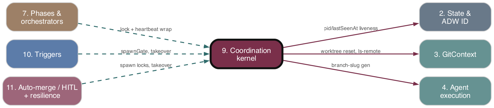

Coordination kernel
As-is reference. Ground truth: source code.

Purpose
The single-host recovery / anti-split-brain layer. Guarantees that for any GitHub issue at most one orchestrator process runs at a time, that a crashed/wedged/duplicate orchestrator is deterministically detected and recovered, and that takeover always resumes from a known-clean worktree against the remote-derived stage. Grounded in three invariants: single-host-per-repo (deployment convention, not code-enforced), OS-level liveness (PID + start-time) is authoritative for "is it alive", and the remote (branch/PR) is authoritative for "how far did work get".
Responsibilities
- Per-issue spawn lock (exclusive-create file lock keyed by
owner_repo_issue-N), held for the orchestrator's full lifetime. - PID + start-time liveness (
isProcessLive) closing the PID-reuse hazard. - Heartbeat ticker writing
lastSeenAtevery 30s, decoupled from phase progress. - Hung-orchestrator detection (live PID +
*_runningstage + stalelastSeenAt) → SIGKILL + rewrite toabandoned. - Stage-classification taxonomy (6 classes) routing recovery decisions.
- Bounded resume policy (cap automatic phase_timeout resumes at 3, then escalate to
human_gated). - Remote reconcile: derive authoritative
WorkflowStagefrom branch/PR with read-your-write re-verification. - Takeover decision tree: single entrypoint (
evaluateCandidate) deciding spawn_fresh / take_over / defer / skip_terminal / escalate. - Worktree probe → reuse-gate → reset: reuse a healthy worktree in place, else hard-reset to
origin/<branch>. - Branch-name resolution (persisted → recovery comment → deterministic identity fallback → LLM) and adwId reverse-lookup from branch.
- Repo-identity cross-check (launch boundary authoritative; refuse divergent resume).
Key Files
| Path | Role |
|---|---|
adws/triggers/spawnGate.ts |
Per-issue spawn lock: exclusive-create, stale-lock reclaim via liveness, lock record (pid/pidStartedAt/repoKey/issue/startedAt). |
| --- | --- |
adws/triggers/takeoverHandler.ts |
evaluateCandidate — the full takeover decision tree; all I/O injected via TakeoverDeps. |
| --- | --- |
adws/phases/orchestratorLock.ts |
Lifecycle wrappers (runWithOrchestratorLifecycle, runWithRaw…): lock-acquire → heartbeat-start → fn → stop → release. |
| --- | --- |
adws/phases/branchNameResolution.ts |
resolveWorkflowBranchName 4-tier priority; persists name; LLM-fork guard (#524). |
| --- | --- |
adws/phases/branchIdentityFallback.ts |
findExistingBranchForIssue, recoverAdwIdForBranch — slug-agnostic branch/adwId recovery. |
| --- | --- |
adws/core/processLiveness.ts |
getProcessStartTime / isProcessLive (Linux /proc/<pid>/stat field 22; macOS/BSD ps -o lstart=; Windows unsupported). |
| --- | --- |
adws/core/heartbeat.ts |
startHeartbeat/stopHeartbeat setInterval writing lastSeenAt. |
| --- | --- |
adws/core/hungOrchestratorDetector.ts |
findHungOrchestrators — pure query, no side effects. |
| --- | --- |
adws/core/stageClassifier.ts |
classifyStage (exhaustive over union) + classifyStageString (dynamic *_running/*_completed). |
| --- | --- |
adws/core/resumePolicy.ts |
nextResumeAction, MAX_RESUME_ATTEMPTS=3. |
| --- | --- |
adws/core/remoteReconcile.ts |
deriveStageFromRemote, mapArtifactsToStage, re-verification retries. |
| --- | --- |
adws/core/repoIdentityCrossCheck.ts |
crossCheckRepoIdentity, RepoIdentityMismatchError. |
| --- | --- |
adws/vcs/worktreeProbe.ts |
probeWorktree (Class-A git-operability signals), clearOrphanedIndexLock. |
| --- | --- |
adws/vcs/worktreeReuseGate.ts |
decideWorktreeReuse — pure reuse/reset decision + typed reasons + WorktreeProbe type. |
| --- | --- |
adws/vcs/worktreeReset.ts |
Vestigial — reset I/O migrated to GitContext.resetWorktree (#662); no exports. |
| --- | --- |
adws/vcs/branchIdentity.ts |
deterministicBranchName, branchMatchesIssue (slug-free, issue-boundary-exact). |
Behavior & Flows
Spawn lock. acquireIssueSpawnLock writes the record with wx (exclusive). On EEXIST, reads existing: if holder is live (isProcessLive) → return false; else remove stale lock and re-create. Lock file persists across crashes (abnormal-exit handlers call process.exit so finally release does not run); the next caller reclaims via the dead-PID staleness check. orchestratorLock.ts wraps fn lifecycle and returns false if the lock is contended (caller exits 0).
Hung sweep (cron, every HUNG_DETECTOR_INTERVAL_CYCLES=5 cycles, runHungDetectorSweep in trigger_cron): findHungOrchestrators(now, HEARTBEAT_STALE_THRESHOLD_MS=180_000) returns entries with *_running stage + live PID + lastSeenAt older than threshold. Caller SIGKILLs each PID and rewrites state to abandoned. (Auth-gate tick separately SIGTERMs live orchestrators and marks paused_auth.)
Takeover decision tree (evaluateCandidate, ordered):
1. Acquire spawn lock; on failure → defer_live_holder (with holder pid).
2. Resolve adwId from issue comments (extractLatestAdwId); null → spawn_fresh.
3. Read top-level state; null → spawn_fresh.
4. Classify state.workflowStage:
- terminal (completed/discarded/paused/paused_auth) → release lock, skip_terminal.
- retriable (abandoned) → probe worktree → reuse-in-place if healthy else reset-from-remote → reconcile → take_over_adwId.
- phase_timeout → resume cap (#639): if resumeAttempts >= 3 write human_gated + comment + release → escalate_human_gated; else increment and run reuse-or-reset path.
- active (*_running/starting/resuming) → if recorded PID live, SIGKILL it; then reset-from-remote → reconcile → take_over_adwId.
- else (awaiting_merge/human_gated/resumable) → spawn_fresh.
Reuse-or-reset (recoverViaResumeInPlaceOrReset): probeWorktree gathers registration (healthy/locked/prunable/missing), index.lock state (absent/orphaned/live_held — orphaned iff lock present but recorded owner dead), interrupted op (rebase/merge/cherry_pick), HEAD-on-expected-branch, and liveOwner. decideWorktreeReuse returns reuse only if every signal healthy; any fault → typed reset reason. On reuse with orphaned lock, clears it before resuming. On reset, recoverViaResetFromRemote calls GitContext.resetWorktree(path, branch).
Remote reconcile (deriveStageFromRemote): reads branchName from state; maps (branchExists, prState) → stage (no branch → null/state fallback; branch only → branch_created; OPEN → awaiting_merge; MERGED → completed; CLOSED → discarded). Mandatory re-read until two consecutive reads agree, up to MAX_RECONCILE_VERIFICATION_RETRIES=3; persistent divergence → state-file fallback. Guards GitHub read-your-write lag.
Branch-name resolution (resolveWorkflowBranchName): persisted state → recovery-comment branch → deterministic identity fallback (findExistingBranchForIssue matching {prefix}-issue-{N}[-slug]) → LLM (runGenerateBranchNameAgent, at most once per adwId). After LLM, re-reads persisted name; if it diverges, throws (#524, prevents orphan-worktree fork). workflowInit also reverse-recovers adwId via recoverAdwIdForBranch when the comment-based adwId is lost, and calls crossCheckRepoIdentity(launch, persisted) — throws RepoIdentityMismatchError on owner/repo mismatch (case-insensitive).
Data Structures
IssueSpawnLockRecord{ pid, pidStartedAt, repoKey, issueNumber, startedAt }(filespawn_locks/{owner}_{repo}_issue-{N}.json).CandidateDecisionunion:spawn_fresh | take_over_adwId{adwId,derivedStage} | defer_live_holder{holderPid} | skip_terminal{adwId,terminalStage} | escalate_human_gated{adwId}.StageClass:active | awaiting_merge | retriable | resumable | terminal | human_gated.WorktreeProbe{ registration, indexLock, interruptedOp, headOnExpectedBranch, liveOwner };WorktreeReuseDecision(reusetrue | false+reason);WorktreeResetReason(9 typed reasons).HungOrchestrator{ adwId, pid, pidStartedAt, lastSeenAt, workflowStage, issueNumber }.HeartbeatHandle{ adwId, timer }.ResumeAction=resume | escalate.- State fields consumed/written:
pid,pidStartedAt,lastSeenAt,branchName,workflowStage,resumeAttempts,repoIdentity.
Public Interface
- spawnGate:
acquireIssueSpawnLock,releaseIssueSpawnLock,readSpawnLockRecord,getSpawnLockFilePath. - orchestratorLock:
acquireOrchestratorLock,releaseOrchestratorLock,runWithOrchestratorLifecycle,runWithRawOrchestratorLifecycle. - takeoverHandler:
evaluateCandidate,buildDefaultTakeoverDeps,TakeoverDeps,CandidateDecision. - processLiveness:
getProcessStartTime,isProcessLive. - heartbeat:
startHeartbeat,stopHeartbeat. - hungOrchestratorDetector:
findHungOrchestrators. - stageClassifier:
classifyStage,classifyStageString. - resumePolicy:
nextResumeAction,MAX_RESUME_ATTEMPTS. - remoteReconcile:
deriveStageFromRemote,mapArtifactsToStage,buildDefaultReconcileDeps. - repoIdentityCrossCheck:
crossCheckRepoIdentity,sameRepoIdentity,RepoIdentityMismatchError. - worktreeProbe:
probeWorktree,clearOrphanedIndexLock. worktreeReuseGate:decideWorktreeReuse. - branchIdentity:
deterministicBranchName,branchMatchesIssue. - branchNameResolution:
resolveWorkflowBranchName,readPersistedBranchName,persistBranchName. - branchIdentityFallback:
findExistingBranchForIssue,recoverAdwIdForBranch.
Dependencies
- Upstream (depends on):
- 2. State & ADW ID —
AgentStateManagerread/write top-level state;generateAdwId. - 3. GitContext —
gitContextForSync,worktreePathFor,resetWorktree; raw git viaexecSync. - 1. Config & Environment —
AGENTS_STATE_DIR,HEARTBEAT_TICK_INTERVAL_MS,HEARTBEAT_STALE_THRESHOLD_MS,MAX_RESUME_ATTEMPTS,branchPrefixMap/Aliases. - GitHub API —
commentOnIssue,findPRByBranch,getRepoInfo,extractLatestAdwId(cronStageResolver),git ls-remote. - 4. Agent execution —
runGenerateBranchNameAgent(LLM slug generation). - Downstream (depended on by):
- 10. Triggers —
trigger_cron,cronIssueFilter,webhookGatekeeper,scanAuthQueuecallevaluateCandidate/hung sweep. - 7. Phases & orchestrators — all
adw*.tsxentrypoints +workflowInituse the lock lifecycle, branch resolution, repo cross-check. - 11. Auto-merge / HITL + resilience queues — pause/auth queue scanners share the lock lifecycle and the
paused/paused_auth/human_gatedterminal/escalation stages.
Interactions
| Other subsystem | Direction | What is exchanged |
|---|---|---|
| 2. State & ADW ID | in/out | Reads pid/pidStartedAt/lastSeenAt/branchName/workflowStage/resumeAttempts/repoIdentity; writes abandoned/human_gated/resumeAttempts/lastSeenAt/branchName. |
| --- | --- | --- |
| 3. GitContext | out | Worktree path resolution, hard-reset to origin/<branch>, branch/worktree listing, ls-remote. |
| --- | --- | --- |
| 4. Agent execution | out | LLM branch-slug generation (resolveWorkflowBranchName). |
| --- | --- | --- |
| 7. Phases & orchestrators | in | Entrypoints wrap fn in lock+heartbeat lifecycle; workflowInit calls branch resolution + repo cross-check. |
| --- | --- | --- |
| 10. Triggers | in | Cron/webhook call evaluateCandidate; cron runs hung-detector sweep on a cycle gate. |
| --- | --- | --- |
| 11. Auto-merge / HITL + resilience queues | in/out | Terminal paused/paused_auth deferred to pause/auth queue scanners; phase_timeout cap escalates to human_gated HITL. |
PRD Divergences
- resumePolicy / phase_timeout cap (#639) not in PRD — added after; PRD's takeover tree had no resume-attempt cap or
escalate_human_gateddecision. - Worktree reuse-in-place gate (probe + reuse-gate, #638) not in PRD — PRD specified unconditional hard-reset on every takeover; implementation reuses healthy worktrees and only resets on a fault.
worktreeResetmodule is vestigial — PRD specifiedresetWorktreeToRemote(worktreePath, branch)here; reset I/O migrated toGitContext.resetWorktree(#662), file has no exports.paused_authterminal stage and auth-gate SIGTERM path not in PRD (PRD only hadpaused).- Deterministic branch-identity fallback + adwId reverse-lookup (
branchIdentity/branchIdentityFallback) not in PRD; added as a comment-loss recovery tier ahead of LLM generation. repoIdentityCrossChecknot in PRD.- GitContext-scoped worktree path resolution (
EvaluateCandidateInput.gitContext) added beyond PRD'sevaluateCandidate({issueNumber, repoInfo}). - Otherwise faithful: lock lifetime, PID+start-time liveness, heartbeat 30s / 3-min staleness, stage taxonomy, remote-reconcile re-verification all match.